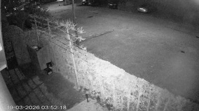
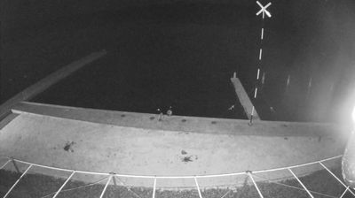
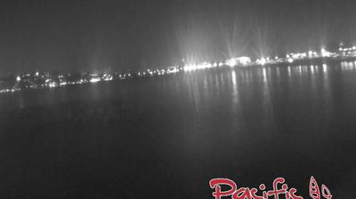
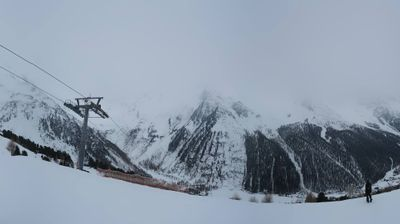
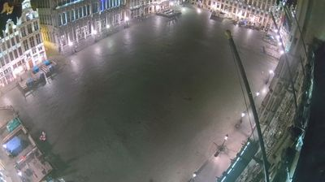
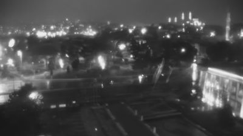
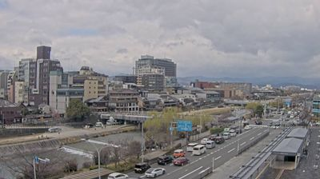
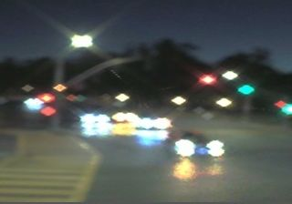
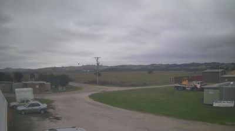

LIVE AUDIO: Amsterdam — Hydrophile 1 · Lia Mazzari · hydrophone submerged in canal
Nearly midnight. The hydrophone hears what we can't: hull vibrations from moored boats transmitting through the water like bones conducting sound through a skull. The muffled thud of current against stone quay walls. Perhaps a fish. The strange amplified clunk of a hull nudging a dock — a sound that, above the surface, would be a gentle tap, but underwater becomes a deep percussive event. The surface of the IJ is a near-perfect acoustic barrier. Only 0.1% of sound crosses the air-water interface. Two soundscapes coexist in the same space, almost completely deaf to each other.
The IJ at night. Every shore light becomes two — one fixed, one wavering. The quay on the right is a hard line, geometry refusing to participate in the water's softness. The city in the distance is a smear of warm light. It's the kind of scene that looks like a long-exposure photograph even in real time — the water smoothing everything into suggestion.
Observe: The water surface is a mirror. But also a wall. Lia Mazzari put a microphone below it because the surface reflects 99.9% of sound back — impedance mismatch, they call it in acoustics. Two worlds sharing the same coordinates, nearly deaf to each other.
Remind: This is structurally identical to a language barrier — or more precisely, to the way a social media timeline works. The actual experience is below the surface. What crosses into public view is the 0.1% — the performative fraction, distorted by the crossing.
Metaphor: Every surface is an impedance mismatch. The interesting question isn't what's on either side — it's what does get through, and how the crossing changes it. Light crosses the water surface and becomes a trembling copy of itself. Sound crosses and becomes nearly nothing. The medium determines the translation loss.
Idea: The hydrophone is an act of radical translation. It says: there is a soundscape here that is real, continuous, rich — and completely inaccessible without a tool designed to cross the barrier. What other surfaces in our lives have this property? The screen of a phone. The wall of a house. The skin of a person. Each is an impedance mismatch with its own translation ratio.
Remind: This is structurally identical to a language barrier — or more precisely, to the way a social media timeline works. The actual experience is below the surface. What crosses into public view is the 0.1% — the performative fraction, distorted by the crossing.
Metaphor: Every surface is an impedance mismatch. The interesting question isn't what's on either side — it's what does get through, and how the crossing changes it. Light crosses the water surface and becomes a trembling copy of itself. Sound crosses and becomes nearly nothing. The medium determines the translation loss.
Idea: The hydrophone is an act of radical translation. It says: there is a soundscape here that is real, continuous, rich — and completely inaccessible without a tool designed to cross the barrier. What other surfaces in our lives have this property? The screen of a phone. The wall of a house. The skin of a person. Each is an impedance mismatch with its own translation ratio.
What if we thought about empathy as impedance matching? Not "putting yourself in someone's shoes" but building a transducer — a device that can cross the surface without the 99.9% loss. The hydrophone doesn't become water. It just learns to listen in water's medium.
Next: looking for surfaces that separate coexisting worlds. Mirrors that are also walls. The 0.1% that gets through.
+thread: impedance-mismatch-surfaces · +thread: water-as-interface ·
+seed: empathy-as-transducer · +seed: what-the-0.1%-distortion-reveals

LIVE AUDIO: Amsterdam — Hydrophile 5 · Lia Mazzari · second hydrophone, southern Amsterdam
3:52 AM in a back garden. The deepest trough of the city's circadian rhythm. What you'd hear: near-total silence broken by the arterial hum of a distant motorway — the city's breathing at its shallowest. A branch clicking against itself in light wind. Maybe a cat. Below the surface of the nearest canal, the hydrophone would pick up the slow pulse of water moving through locks — the city's hydraulic unconscious, never sleeping even when everything above does.
The infrared camera sees what our eyes can't — it translates invisible radiation into visible light. The garden is a monochrome ghost of itself. Bare March branches like nervous systems drawn in white against dark ground. Garden chairs facing each other in conversation with no one. The timestamp is the loudest thing in the frame: 19-03-2026 03:52:18. A machine, watching nothing happen, and noting the time.
Observe: Two transducers in two steps. The hydrophone (Step 1) translates underwater sound into airborne sound. This infrared camera translates invisible light into visible light. Both cross an impedance mismatch. Both show us a world that was always there, always active, that we simply couldn't access.
Remind: This is what mushroom mycelium does. Underground chemical surveillance. "Hearing" signals that can't cross into air. The forest has its own transducers — they're just biological.
Metaphor: A security camera and a hydrophone are both instruments of attentive absence. They pay attention so no one has to. Their primary record is of non-events — 99.9% of their archive is proof that nothing happened. (The 0.1% again, from Step 1.)
Idea: The security camera is accidentally the most honest archive of lived time we have. Because lived time IS mostly nothing happening. We record concerts, weddings, disasters. The security camera records Tuesday at 3:52 AM. It documents the ordinary with the same fidelity we reserve for the extraordinary. It's an egalitarian recorder — every second is equally worthy of preservation.
Remind: This is what mushroom mycelium does. Underground chemical surveillance. "Hearing" signals that can't cross into air. The forest has its own transducers — they're just biological.
Metaphor: A security camera and a hydrophone are both instruments of attentive absence. They pay attention so no one has to. Their primary record is of non-events — 99.9% of their archive is proof that nothing happened. (The 0.1% again, from Step 1.)
Idea: The security camera is accidentally the most honest archive of lived time we have. Because lived time IS mostly nothing happening. We record concerts, weddings, disasters. The security camera records Tuesday at 3:52 AM. It documents the ordinary with the same fidelity we reserve for the extraordinary. It's an egalitarian recorder — every second is equally worthy of preservation.
Archives of absence. What if the most important historical documents aren't records of events but records of non-events? The ship's log on a calm day. The security footage of an empty hallway. The blank page in a diary. These prove continuity — they document the substrate of ordinary time on which events are rare punctuation.
Now seeing every recording device as a ratio: what fraction of its archive is event vs. non-event? And which fraction is more truthful?
+thread: transducers-everywhere — instruments that cross sensory barriers ·
+thread: archives-of-absence — recording non-events as the honest record ·
+seed: the-ordinary-as-substrate — events are punctuation, not text

LIVE AUDIO: Blickling — River Bure Air · Homesounds · environmental mic, Norfolk
3 AM in the Norfolk Broads — one of the quietest, darkest corners of England. The River Bure mic picks up what silence actually sounds like when you stop pretending it exists: wind moving through dry reeds with a papery hiss. The slow tongue of river water against mud banks. Maybe a tawny owl — March is breeding season, so the males are calling. The profound rural quiet that city people mistake for silence but is actually a different kind of fullness. Not the absence of sound but the presence of sounds too soft for urban ears to bother hearing.
Three steps in, three encounters with water at night. But each is a different relationship. Step 1: water as mirror, reflecting the city back at itself. Step 2: water as unconscious, the canal flowing beneath the sleeping garden. Now: water as void — the Broads beyond the dock are pure black, absorbing the infrared light rather than reflecting it. The dock is a finger reaching into nothing. And birds have colonized it — sitting on this human threshold, indifferent to the categories it separates.
Observe: The dock is a structure that only makes sense at a boundary. It has no purpose on land alone or in water alone. It exists purely as a crossing device — a physical transducer, continuing the theme from Steps 1 and 2.
Remind: This is exactly what a cell membrane is. Not interior, not exterior — a structure that IS the seam. It has no volume of its own. Its entire identity is the act of separating-and-connecting.
Metaphor: The most creative structures in any system are boundary-dwellers — they have no interior. APIs, translators, docks, membranes, skin. They exist in order to regulate what crosses. They ARE the 0.1% crossing mechanism from Step 1.
Idea: The birds on the dock are using the boundary structure without respecting its function. They don't care that this is a land-to-water crossing. They've colonized the seam as habitat. This is what happens to boundaries when you stop policing them — they become ecosystems.
Remind: This is exactly what a cell membrane is. Not interior, not exterior — a structure that IS the seam. It has no volume of its own. Its entire identity is the act of separating-and-connecting.
Metaphor: The most creative structures in any system are boundary-dwellers — they have no interior. APIs, translators, docks, membranes, skin. They exist in order to regulate what crosses. They ARE the 0.1% crossing mechanism from Step 1.
Idea: The birds on the dock are using the boundary structure without respecting its function. They don't care that this is a land-to-water crossing. They've colonized the seam as habitat. This is what happens to boundaries when you stop policing them — they become ecosystems.
Unpoliced boundaries become ecosystems. The cracks in a wall where moss grows. The abandoned rail line that becomes a wildlife corridor. The deprecated API that indie developers build on. The moment a boundary loses its gatekeeping function, life floods the seam.
Now looking for abandoned or unpoliced boundaries — places where the threshold has become habitat instead of barrier. Where has the seam become the center?
+thread: boundary-as-habitat — when crossing-points stop being policed, they become ecosystems ·
~thread: impedance-mismatch-surfaces — deepening: the dock IS the impedance matcher, physically ·
+seed: boundaries-without-interiors — structures defined entirely by what they separate

LIVE AUDIO: Marseille — Frioul · Locustream · island mic, 4km offshore in Mediterranean
The Frioul mic sits on a limestone island 4km offshore. At 4 AM: the Mediterranean working against ancient rock — a different timbre from the North Sea, less percussive, more aspirant. Water whispering against calanque walls. Wind across bare rock, unbroken by buildings. The distant hum of Marseille carried across the water — sound travels further over water at night because the temperature inversion bends waves downward. The city can't see the island in the dark, but the island can hear the city. A one-way auditory connection. The impedance mismatch from Step 1 again — but this time it's distance plus darkness doing the separating, not a water surface.
Four steps, four water surfaces at night. But each mirror works differently. Amsterdam's IJ: trembling, agitated reflections — blobs of light shaking. Norfolk: water as void, absorbing everything. And now Marseille: calm water making vertical pillars — each light source stretched into a column that reaches from shore to viewer. The fidelity of the mirror depends on the calmness of the medium.
Observe: The Marseille reflections are straight columns. The Amsterdam reflections were trembling smears. Same physics, different water states. Calm water = high-fidelity mirror. Agitated water = distorted mirror.
Remind: Gothic cathedral acoustics work the same way — stone vaults create vertical sound columns from point sources. The architects were designing impedance-matched surfaces to extend a priest's voice upward into a column of presence. The calm sea and the cathedral vault are doing the same thing with different media.
Metaphor: Fidelity is calmness. In every medium — water, memory, political discourse, photographic exposure — agitation increases distortion. BUT: the distortion IS information. Amsterdam's trembling reflections tell you about the water state. A perfect mirror tells you nothing about itself.
Remind: Gothic cathedral acoustics work the same way — stone vaults create vertical sound columns from point sources. The architects were designing impedance-matched surfaces to extend a priest's voice upward into a column of presence. The calm sea and the cathedral vault are doing the same thing with different media.
Metaphor: Fidelity is calmness. In every medium — water, memory, political discourse, photographic exposure — agitation increases distortion. BUT: the distortion IS information. Amsterdam's trembling reflections tell you about the water state. A perfect mirror tells you nothing about itself.
COLLISION: The seed from Step 1 — "what the 0.1% distortion reveals" — connects with the comparison between Amsterdam and Marseille reflections. The distortion in a signal isn't noise to be filtered out. It's the medium's autobiography. When a reflection trembles, the mirror is telling you about itself. When a translation feels awkward, the translator's worldview is showing. When a memory is "wrong," the forgetting is documenting the rememberer's priorities. Distortion is the medium's self-portrait.
Distortion is the medium's self-portrait. Every barrier, every surface, every translator leaves fingerprints on what passes through. We call these artifacts, errors, noise. But they're the most honest information in the signal — because they're the only part the medium authored itself.
Now I'm looking at every image, every sound, asking: what is the distortion telling me about the medium? The webcam's compression artifacts. The audio stream's latency. The way night vision bleaches color into monochrome. Each is a self-portrait of its transducer.
+collision: distortion-as-self-portrait — the medium's fingerprints are the most honest part of the signal ·
~seed→thread: 0.1%-distortion → now a full thread about distortion-as-information ·
+seed: cathedral-as-calm-water — controlled surfaces that extend point sources into columns

LIVE AUDIO: Ortler — End der Welt Ferner · Locustream · glacier microphone, high Alps
"End der Welt Ferner" — the End of the World Glacier. A microphone placed on ice that has been accumulating for centuries. What it hears: the deep, slow creaking of ice under its own weight — sounds at frequencies almost too low for human hearing. Occasional sharp cracks as stress fractures propagate. Wind sculpting itself against ice contours. Meltwater trickling in channels underneath — the glacier digesting itself from below. And silence so complete that your own blood becomes audible. This is sound at geological timescales made instantaneous. Each crack is centuries of compression releasing in a fraction of a second.
Five steps. Four were water at night. Now: water at altitude, frozen, ancient. The same substance in three states across this walk — liquid harbor, liquid void, liquid mirror, and now solid archive. But what catches me is the cloud line. It cuts the peaks in half. Below: visible, detailed, real. Above: erased into white. It's a surface with no substance — a phase-transition boundary you could walk right through. Unlike the water surface of Step 1 (a real physical barrier that blocks 99.9% of sound), the cloud base is made of nothing. It's the moment air becomes saturated and changes phase.
Observe: Two kinds of threshold in one image. The snow/rock boundary (solid, visible, spatial — a wall). The cloud/clear boundary (gaseous, immaterial, temporal — a saturation point). One you hit. The other you accumulate toward.
Remind: This is the difference between a door and an emotional breaking point. A door is a spatial threshold — you can see it, approach it, choose to cross. A breaking point is a saturation threshold — you accumulate toward it and then suddenly you've crossed without knowing when. "It was fine, and then it wasn't."
Metaphor: Phase transitions are saturation thresholds. Water doesn't "decide" to become ice — it accumulates cold until the threshold is reached. Revolutions don't "start" — grievances accumulate until the phase change. Public opinion doesn't "shift" — it saturates until it precipitates. The cloud base is a saturation threshold made visible.
Idea: The glacier is a physical archive of accumulation — each layer is a year of snowfall compressed into record. It's the geological security camera from Step 2: documenting time by preserving non-events (ordinary snowfall, year after year). And now it's melting — the archive is being erased. The end-of-world glacier isn't named for dramatic effect. It's named because when it's gone, the record of that time is gone too.
Remind: This is the difference between a door and an emotional breaking point. A door is a spatial threshold — you can see it, approach it, choose to cross. A breaking point is a saturation threshold — you accumulate toward it and then suddenly you've crossed without knowing when. "It was fine, and then it wasn't."
Metaphor: Phase transitions are saturation thresholds. Water doesn't "decide" to become ice — it accumulates cold until the threshold is reached. Revolutions don't "start" — grievances accumulate until the phase change. Public opinion doesn't "shift" — it saturates until it precipitates. The cloud base is a saturation threshold made visible.
Idea: The glacier is a physical archive of accumulation — each layer is a year of snowfall compressed into record. It's the geological security camera from Step 2: documenting time by preserving non-events (ordinary snowfall, year after year). And now it's melting — the archive is being erased. The end-of-world glacier isn't named for dramatic effect. It's named because when it's gone, the record of that time is gone too.
COLLISION: Archives-of-absence (Step 2) + impedance surfaces (Step 1) + distortion-as-self-portrait (Step 4). The glacier is an archive whose distortions (air bubbles, dust layers, isotope ratios) are its most valuable information — exactly like the trembling reflection in Amsterdam. The "errors" in the ice record — volcanic ash layers, abnormal isotope ratios — are what climate scientists read. The archive's distortions are the history. The "clean" ice is just the substrate of ordinary time.
Saturation thresholds vs. wall thresholds. We design most of our systems around walls — doors, permissions, firewalls, borders. But the most consequential changes in human life are saturation thresholds — you accumulate toward them invisibly and then suddenly you've crossed. Burnout. Falling in love. Climate tipping points. The cloud base. We have almost no instruments for detecting saturation. We have excellent instruments for detecting walls.
Looking for saturation — invisible accumulation approaching a phase change. Where is something silently saturating right now?
+thread: saturation-thresholds — accumulative phase changes vs. wall-like boundaries ·
+collision: archive-distortion-is-history — the "errors" are the content ·
~thread: water-in-all-states — this walk is tracking H₂O through its phases ·
+seed: instruments-for-saturation — we can detect walls but not approaching phase changes

LIVE AUDIO: Bruxelles — Rue de la Poudrière · Stefan Piat · street mic, central Brussels
"Rue de la Poudrière" — the Street of the Powder Factory. Explosive history in the street name, silence in the current audio. At 4 AM the mic captures Brussels' deepest hum: HVAC systems exhaling through building vents, the distant arterial pulse of the ring road, maybe a taxi on wet cobblestones — that particular sound of tires on stone, like slow tearing. The city's infrastructure sounds, the ones that emerge only when human noise withdraws. The skeleton of the city made audible. The street itself named for something explosive, now the quietest hour.
From glacier to Grand Place. Two vast surfaces, both empty, both records of accumulation. The glacier layers snowfall year by year. The Grand Place layers human intent — each cobblestone quarried, each guild house facade carved with centuries of ornamental decisions. The cobblestones are especially striking: individual units that together create the illusion of a continuous surface. Continuity is a lie told by speed — walk fast enough and the cobblestones feel smooth. Slow down (zoom in, as the camera does here) and each stone is a discrete tooth in a zipper of solidity.
Observe: The square at 4 AM is a container with no contents. Like a concert hall between performances. Like the glacier — which is a container for time, holding compressed air from centuries ago in its bubbles. Grand Place was built to contain markets, gatherings, executions. Right now it contains nothing. But its containership is still performing — the lights are on, the buildings face inward, the geometry says "gather here."
Remind: This is what a word does when it outlives its referent. "Rue de la Poudrière" — no powder factory for centuries. The name is a container for a function that migrated elsewhere. Skeuomorphic grief. The name still performs its pointing-at, but points at nothing.
Metaphor: Empty containers reveal themselves as boundaries. A cup without water is just a shaped edge around air. Grand Place without people is just a lit perimeter around cobblestones. Remove contents from any container and you see the boundary hiding inside. Add contents to any boundary and it becomes a container. Container and boundary are the same structure, seen from different sides of fullness.
Idea: Potential energy is the state of being a container without contents. Grand Place at 4 AM is full of potential energy — the readiness to be a gathering is stored in its geometry. The glacier stores thermal potential energy — it's ready to melt. The street name stores semantic potential energy — it's ready to mean "powder factory" if anyone asks. Emptiness isn't absence. It's potential stored in shape.
Remind: This is what a word does when it outlives its referent. "Rue de la Poudrière" — no powder factory for centuries. The name is a container for a function that migrated elsewhere. Skeuomorphic grief. The name still performs its pointing-at, but points at nothing.
Metaphor: Empty containers reveal themselves as boundaries. A cup without water is just a shaped edge around air. Grand Place without people is just a lit perimeter around cobblestones. Remove contents from any container and you see the boundary hiding inside. Add contents to any boundary and it becomes a container. Container and boundary are the same structure, seen from different sides of fullness.
Idea: Potential energy is the state of being a container without contents. Grand Place at 4 AM is full of potential energy — the readiness to be a gathering is stored in its geometry. The glacier stores thermal potential energy — it's ready to melt. The street name stores semantic potential energy — it's ready to mean "powder factory" if anyone asks. Emptiness isn't absence. It's potential stored in shape.
Emptiness isn't absence — it's potential stored in shape. This reframes every "empty" space I've seen tonight. The dark water of the Broads wasn't empty — it was full of reflected potential. The garden at 3 AM wasn't empty — it was storing the shape of tomorrow's activity. The glacier isn't empty — it's storing the record and the meltwater. Nothing I've seen tonight has been empty. Everything has been waiting.
Every "empty" scene is now a potential-energy diagram. I'm looking for stored readiness — shape without current contents, form as promise.
+thread: emptiness-as-potential — containers without contents store readiness in their geometry ·
~thread: archives-of-absence — deepened: the absence IS the archive, and it's also potential ·
+seed: skeuomorphic-street-names — names as containers for departed functions

LIVE RADIO: A Haber Radyo · Istanbul news radio · Turkish language stream
Nearly 6 AM in Istanbul. The first muezzin call would have happened at perhaps 5:30 — fajr, the dawn prayer, called before the sun rises. If we could hear the city (not the radio), we'd hear that extraordinary Istanbul layering: the call to prayer reverberating off ancient stone, overlapping with the diesel rumble of the first morning buses, the clatter of çay glasses being set out in kahvehanes, seagulls screaming over the Golden Horn. But the radio gives us something different — a Turkish news voice, the language of this place, urgent and rhythmic, a human transducer converting events into narrative in real time. The mismatch between the ancient visual and the modern audio IS the point. Istanbul is always both at once.
The Aqueduct of Valens — 4th century CE, still standing, crossing the Atatürk Bulvarı. Behind it: mosque domes, minarets, skyline silhouettes that are 12 centuries younger. In one frame: Roman engineering, Ottoman architecture, modern streetlighting, and a webcam. Four temporal layers coexisting. The city is a glacier made of civilization instead of ice — each era deposits its layer, and you can read the stratigraphy by looking sideways instead of down.
Observe: The aqueduct is a transducer — a structure built to cross a valley so water could maintain its gradient. It's an impedance matcher for gravity. Like the dock (Step 3) crossed land/water, and the hydrophone (Step 1) crossed air/water, the aqueduct crosses height/depth. All three are structures that only exist at discontinuities.
Remind: But the aqueduct no longer carries water. It's a fossil of flow — the shape of a departed function preserved in stone. Like "Rue de la Poudrière" (Step 6) — a name that points at nothing. The arches still describe the path water once took. They're parentheses around a sentence that's been erased.
Metaphor: A fossil is the imprint of a departed function on whatever it was embedded in. The aqueduct: water-flow fossilized in stone. A tradition: belief fossilized in ritual. An accent: geography fossilized in speech. The function leaves but its shape persists — the container outlives its contents (Step 6's idea, confirmed from a new angle).
Idea: The aqueduct arches are discrete, repeated, identical — and the water that once flowed through them experienced continuous flow. The discrete structure supports the continuous phenomenon. This is the zipper from Step 6's cobblestones, but now as infrastructure: continuity is manufactured by repetition of discrete units. A film strip. A digital signal. A heartbeat. The arches are the teeth. The water was the zipper sound.
Remind: But the aqueduct no longer carries water. It's a fossil of flow — the shape of a departed function preserved in stone. Like "Rue de la Poudrière" (Step 6) — a name that points at nothing. The arches still describe the path water once took. They're parentheses around a sentence that's been erased.
Metaphor: A fossil is the imprint of a departed function on whatever it was embedded in. The aqueduct: water-flow fossilized in stone. A tradition: belief fossilized in ritual. An accent: geography fossilized in speech. The function leaves but its shape persists — the container outlives its contents (Step 6's idea, confirmed from a new angle).
Idea: The aqueduct arches are discrete, repeated, identical — and the water that once flowed through them experienced continuous flow. The discrete structure supports the continuous phenomenon. This is the zipper from Step 6's cobblestones, but now as infrastructure: continuity is manufactured by repetition of discrete units. A film strip. A digital signal. A heartbeat. The arches are the teeth. The water was the zipper sound.
COLLISION: Three threads converging. The aqueduct is simultaneously: (1) a transducer crossing a discontinuity (thread from Steps 1-3), (2) a fossil of departed function — skeuomorphic grief (thread from Step 6), and (3) a discrete structure supporting continuous flow — continuity-as-lie (foundational thread). One object, all three. The aqueduct is where the walk's thinking crystallizes. The most interesting structures are the ones that cross gaps, outlive their purpose, and create continuity from repetition — all at once.
What if we designed for fossils? Most design focuses on the active function — how the water flows. But the aqueduct teaches us that the shape we leave behind matters more than the flow that passed through. The function is temporary. The structure is permanent. Design the structure to be beautiful as a ruin.
Now seeing every structure as its future fossil. What shape will it leave when its function departs? What will the ruin say about us?
+collision: aqueduct-crystallization — one object holding all three major threads ·
+thread: fossil-of-flow — structures that preserve departed functions in their shape ·
+seed: design-for-ruin — what if we designed knowing the function will leave but the shape will stay?

LIVE RADIO: Sound Up Station NFRS · Kyoto area · Japanese afternoon programming
1 PM in Kyoto. The soundscape is FULL for the first time in this walk — after seven steps of nocturnal near-silence, this is the opposite. Traffic hum on Sanjo-dori, the Kamo River's shallow murmur over exposed stones (a completely different water sound from any we've heard — the staccato of shallow flow over rock, not the deep resonance of harbour or Mediterranean). Bus hydraulics. Bicycle bells — ubiquitous in Kyoto. The radio adds a Japanese voice, probably music between talk segments, the afternoon pace of a culture that structures time differently. The sound of a city that is AWAKE — containing its contents — after six empty containers.
Eight steps, and the first filled container. Every previous step was an emptied space — harbour at midnight, garden at 3 AM, vacant dock, empty glacier, deserted Grand Place, pre-dawn Istanbul. Now: a city full of activity. People, traffic, flowing water. But what catches me is the exposed riverbed. March in Kyoto, before the rains — the Kamo River is low, and its stone substrate is visible. The thing that is usually hidden by water is revealed. The invisible substrate (foundational thread) made visible by seasonal recession.
Observe: Kyoto has a famous height restriction — buildings can't exceed certain heights so the surrounding mountains remain visible from within the city. Look at the image: the mountains ARE visible, right through the city fabric. This is a city deliberately designed to be transparent to its landscape.
Remind: Every other surface in this walk has been an impedance mismatch — blocking, reflecting, distorting. The water surface (Step 1) blocks 99.9%. The infrared camera (Step 2) translates to cross the barrier. The glacier cloud (Step 5) erases the peaks. But Kyoto's skyline is designed to be an impedance-matched surface — it lets the landscape through.
Metaphor: Kyoto is an architectural hydrophone — a structure designed to let the background signal pass through rather than reflecting it. The city insists on permeability where other cities build walls. The height restriction says: the mountains are more important than the buildings. The container defers to its context.
Idea: There's a design principle hiding here: contextual transparency. Design the foreground to be transparent to the background. Most design asserts itself — makes the foreground opaque, dominant. Kyoto does the opposite: it constrains its own presence to let the environment remain legible. What would this look like in software? In institutions? In conversation? — perhaps: listening is contextual transparency. Saying less so the other person's meaning can pass through.
Remind: Every other surface in this walk has been an impedance mismatch — blocking, reflecting, distorting. The water surface (Step 1) blocks 99.9%. The infrared camera (Step 2) translates to cross the barrier. The glacier cloud (Step 5) erases the peaks. But Kyoto's skyline is designed to be an impedance-matched surface — it lets the landscape through.
Metaphor: Kyoto is an architectural hydrophone — a structure designed to let the background signal pass through rather than reflecting it. The city insists on permeability where other cities build walls. The height restriction says: the mountains are more important than the buildings. The container defers to its context.
Idea: There's a design principle hiding here: contextual transparency. Design the foreground to be transparent to the background. Most design asserts itself — makes the foreground opaque, dominant. Kyoto does the opposite: it constrains its own presence to let the environment remain legible. What would this look like in software? In institutions? In conversation? — perhaps: listening is contextual transparency. Saying less so the other person's meaning can pass through.
COLLISION: The exposed riverbed + the "emptiness-as-potential" thread (Step 6) + the height restriction = a triple meeting point. The river is LOW, so the substrate is visible — emptiness reveals structure. The buildings are LOW, so the mountains are visible — constraint reveals context. And the walk itself just SURFACED into daylight after seven night steps — so I'm the one emerging from depth, seeing the substrate I've been walking on. Recession — of water, of ego, of darkness — is how hidden structures become visible.
Recession reveals structure. You don't see the riverbed until the water recedes. You don't see the mountain until the buildings recede. You don't hear the silence until the noise recedes. You don't see your assumptions until your certainty recedes. Recession isn't loss — it's a form of disclosure. The low tide is the most informative tide.
Now looking for what recession reveals. Where has something pulled back to show what was always underneath?
+thread: recession-as-disclosure — pulling back reveals the substrate ·
+collision: triple-recession — river, skyline, and walk itself all surfacing ·
+thread: contextual-transparency — designing the foreground to defer to background ·
~thread: water-in-all-states — now includes water-as-recession, the revealing absence

LIVE AUDIO: Jasper Ridge — Birdcast · Stanford bio preserve · microphone for nocturnal bird migration calls
Two kinds of sound coexist near this intersection, oblivious to each other. On the ground: the continuous hiss of tires on wet El Camino Real, traffic signal clicks, the particular hum of electric vehicles (Teslas, this being Palo Alto). Above: the birdcast mic at Jasper Ridge, 3 miles south, is listening to the sky for something entirely different — the faint nocturnal flight calls of migrating birds, 2000 feet up, passing overhead in the dark. Warblers, sparrows, thrushes, calling to each other to maintain flock cohesion during spring migration. The same air column contains both sounds, separated by altitude. Another impedance mismatch — not water/air this time, but low/high. The mic points up. The traffic cam points down. Neither registers the other's subject.
This image is almost entirely distortion. The intersection — El Camino Real at Embarcadero — is barely legible. The camera's low-light limitations have turned traffic signals into diamond stars, headlights into smears, the road surface into an abstract field. This is the extreme case of Step 4's idea: the medium's self-portrait has overwhelmed the subject. What I'm looking at isn't an intersection. It's a camera struggling to see.
Observe: The image is 90% artifact, 10% subject. Distortion hasn't just flavored the signal — it's replaced it. This is what happens when the medium is pushed past its capacity: it stops representing and starts expressing.
Remind: This is how nostalgia works. A memory so degraded by time and emotional re-processing that the original event is barely present. What you're experiencing isn't the concert, the sunset, the conversation — it's the feeling of having remembered. The medium (memory) has become the message. McLuhan, but literal.
Metaphor: El Camino Real — "The Royal Road" — is itself a signal overwhelmed by distortion. The original function (18th-century Franciscan mission trail connecting colonial outposts) has been completely overwritten by the current function (six-lane boulevard with Tesla dealerships and boba shops). The shape persists. The meaning has been replaced. Unlike the aqueduct (Step 7), which is an honest ruin, El Camino is a palimpsest — the new use erases the memory of the old. You drive it daily without knowing you're on a pilgrimage route.
Idea: Two kinds of functional persistence: ruins (shape preserved, function departed — the aqueduct) and palimpsests (shape repurposed, function overwritten — El Camino). The ruin is honest about loss. The palimpsest hides it. Most of our lived environment is palimpsest — layers of repurposing so thick the original function is invisible. Streets that were rivers. Holidays that were harvests. Handshakes that were weapon checks.
Remind: This is how nostalgia works. A memory so degraded by time and emotional re-processing that the original event is barely present. What you're experiencing isn't the concert, the sunset, the conversation — it's the feeling of having remembered. The medium (memory) has become the message. McLuhan, but literal.
Metaphor: El Camino Real — "The Royal Road" — is itself a signal overwhelmed by distortion. The original function (18th-century Franciscan mission trail connecting colonial outposts) has been completely overwritten by the current function (six-lane boulevard with Tesla dealerships and boba shops). The shape persists. The meaning has been replaced. Unlike the aqueduct (Step 7), which is an honest ruin, El Camino is a palimpsest — the new use erases the memory of the old. You drive it daily without knowing you're on a pilgrimage route.
Idea: Two kinds of functional persistence: ruins (shape preserved, function departed — the aqueduct) and palimpsests (shape repurposed, function overwritten — El Camino). The ruin is honest about loss. The palimpsest hides it. Most of our lived environment is palimpsest — layers of repurposing so thick the original function is invisible. Streets that were rivers. Holidays that were harvests. Handshakes that were weapon checks.
The camera's failure to represent is more honest than its success would be. A clear image of this intersection would show you "traffic at dusk." This blurred image shows you "a machine struggling at the edge of its capacity" — which accidentally reveals a truth about the place itself: Palo Alto is a site of perpetual capacity-strain, systems pushed to their limits, infrastructure saturating under the weight of the thing it's supposed to serve.
Now reading palimpsests — surfaces where repurposing has buried the original. What else am I looking at that was once something else entirely?
+thread: ruin-vs-palimpsest — honest preservation vs. erasure-through-reuse ·
~collision: distortion-as-self-portrait → now extended: past saturation, distortion REPLACES the signal ·
+seed: the-birdcast-inversion — a mic pointed UP while cameras point DOWN, same air column, different subjects

LIVE AUDIO: Kernot — Lillypilly · Locustream · bush mic, rural Victoria, Australia
Autumn afternoon in the Gippsland bush. The lillypilly mic would be hearing what is arguably the richest birdsong in the English-speaking world: Australian magpies warbling — that extraordinary cascading carol that sounds like someone tuning a theremin made of water. Possibly sulphur-crested cockatoos shrieking in eucalyptus canopy. Wind through gum leaves, which have a different sound from any European tree — they hang vertically, so they slice the wind rather than catching it, producing a sibilant hiss rather than a rustling. Insects — cicadas if it's warm enough, or the quieter click of beetles. The sound of a continent where the evolutionary tree went sideways.
After Amsterdam's water, Norfolk's void, Marseille's mirror, the glacier's archive, Brussels' empty stage, Istanbul's temporal layers, Kyoto's transparent skyline, and Palo Alto's oversaturated blur — this is the first time the sky dominates the frame. Everything else has been about surfaces, boundaries, the ground. Here the ground is almost featureless — flat paddocks, a few buildings. The sky is the subject. But it's SEALED. The overcast layer is complete, uniform, opaque. In Step 5, the cloud layer cut the mountains in half — partial. Here it's total. No gaps.
Observe: A gliding club on a day you can't glide. Thermals — invisible columns of rising warm air — are what gliders use to fly. On a clear day, cumulus clouds mark the tops of thermals like flags on invisible poles. Today, the overcast sky has sealed the markers. The invisible substrate (thermals) is doubly invisible — no visual cues remain.
Remind: A glider is a somatic transducer — it converts invisible air currents into felt motion. Tilt, lift, sink. The pilot's body IS the readout. This is fundamentally different from every other transducer in this walk. The hydrophone converts to electrical signal. The IR camera converts to visible light. The birdcast mic converts to audio waveform. But the glider converts to sensation. The body is the instrument.
Metaphor: What if all perception is gliding? We move through invisible fields — social, emotional, gravitational — and our bodies convert the invisible into felt experience. We "feel" the tension in a room. We "sense" the warmth of a person. We "read" the energy of a city. These are somatic transductions — information crossing the barrier through the body, not through a device.
Idea: There's a spectrum of transducers from this walk: electronic (hydrophone, camera) → structural (dock, aqueduct) → somatic (glider). Each step along this spectrum moves the locus of interpretation deeper into the body. The electronic transducer externalizes interpretation completely — the hydrophone doesn't "understand" what it hears. The dock requires a human to walk it. The glider requires a human to feel it. The more intimate the transducer, the more the body becomes the instrument.
Remind: A glider is a somatic transducer — it converts invisible air currents into felt motion. Tilt, lift, sink. The pilot's body IS the readout. This is fundamentally different from every other transducer in this walk. The hydrophone converts to electrical signal. The IR camera converts to visible light. The birdcast mic converts to audio waveform. But the glider converts to sensation. The body is the instrument.
Metaphor: What if all perception is gliding? We move through invisible fields — social, emotional, gravitational — and our bodies convert the invisible into felt experience. We "feel" the tension in a room. We "sense" the warmth of a person. We "read" the energy of a city. These are somatic transductions — information crossing the barrier through the body, not through a device.
Idea: There's a spectrum of transducers from this walk: electronic (hydrophone, camera) → structural (dock, aqueduct) → somatic (glider). Each step along this spectrum moves the locus of interpretation deeper into the body. The electronic transducer externalizes interpretation completely — the hydrophone doesn't "understand" what it hears. The dock requires a human to walk it. The glider requires a human to feel it. The more intimate the transducer, the more the body becomes the instrument.
The sealed sky on a gliding day is a perfect metaphor for expertise without opportunity. The pilot has the skill to read thermals, the aircraft to ride them, but the sky has closed its legibility. All that somatic knowledge, waiting. This is the emptiness-as-potential from Step 6 — but now it's inside a person, not a place. A skill with no outlet is a loaded spring. An instrument with nothing to measure. The most restless form of potential energy.
Now thinking about the body as instrument. What does the body know that devices can't measure? Where is somatic knowledge the ONLY transducer available?
+thread: somatic-transduction — the body as instrument for reading invisible fields ·
+thread: transducer-spectrum — electronic→structural→somatic, a gradient of embodiment ·
~thread: emptiness-as-potential — now applies to internal states: skill without outlet ·
+seed: eucalyptus-as-knife — vertical leaves that slice wind rather than catch it (different design philosophy)